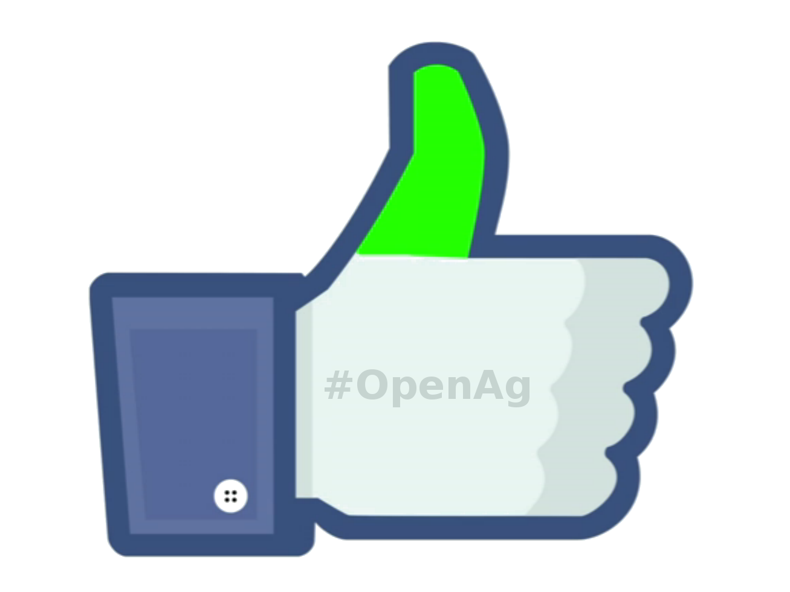
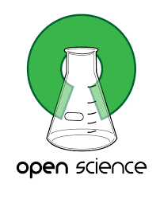

<script src="https://code.jquery.com/jquery-1.12.0.min.js"></script>
<script type="text/javascript">
  (function ($, undefined) {
  var roleList = ["medicine", "materials", "subsistence", "profit", "enjoyment", "food", "a better world"]

  function rollRole() {
    roleList.push(roleList.shift())

    $('#role').fadeOut(function () {
      $(this).text(roleList[0]).fadeIn()
    })
  }

  // Rotate title, etc.
  setInterval(rollRole, 5000);
  })(jQuery);
</script>

<section class="content" id="about">
  <div class="container">
        <div class="row call-to-action">
            <div class="col-lg-6">
                
            </div>
            <div class="col-lg-6">
<!-- <h3>What will <em>you</em> grow?</h3> -->
        <!-- <p><strong>Open software, hardware, and datasets for the Internet of living things.</strong><p> -->

<p>We want to <em>enable everyone</em> to sustainably grow things; 
<em>for <span id="role">food</span></em>.</p>
<!-- for subsistence, enjoyment, medicine, materials, food, profit, etc.</em>.</p> -->
              <!-- <p><strong>Open software, data, and hardware for the Internet of Living Things.</strong></p> -->

<p>What will you grow?</p>
              <!-- <p>We are launching soon. If you're a developer or urban farmer (or both) <a href="#contact">please reach out</a>.</p> -->

              <!-- it possible for the devices to work independently of their cloud services over WiFi or Bluetooth. -->

 <!--              <p>We'll be launching soon! If you're a developer feel free to try out <a href="https://github.com/CommonGarden/Grow-IoT">Grow-IoT on Github</a>.</p> -->

              <!-- Begin MailChimp Signup Form -->
              <div id="mc_embed_signup">
                  <form action="//commongarden.us10.list-manage.com/subscribe/post?u=81f1da6ff0b51ea5d0fedefdb&amp;id=f23d844980" method="post" id="mc-embedded-subscribe-form" name="mc-embedded-subscribe-form" class="validate" target="_blank" novalidate>
                    <div id="mc_embed_signup_scroll">
                      <div class="form-group">
                        <input type="email" value="" name="EMAIL" id="mce-EMAIL" class="form-control transparent-form" placeholder="Enter email address" required>
                      </div>
                        <!-- real people should not fill this in and expect good things - do not remove this or risk form bot signups-->
                        <div style="position: absolute; left: -5000px;"><input type="text" name="b_81f1da6ff0b51ea5d0fedefdb_f23d844980" tabindex="-1" value=""></div>
                        <div class="clear text-center"><input type="submit" value="Stay up to date" name="subscribe" id="mc-embedded-subscribe" class="btn cg-btn"></div>
                    </div>
                  </form>
              </div>
              <!--End mc_embed_signup-->
            </div>
        </div>
  </div>

  <div class="container overview">


    <div class="row">
      <div class="col-lg-6">
        
      </div>
      <div class="col-lg-6">
        <h3>We are making open software, hardware, and datasets for the Internet of Living Things.</h3>
        <h4>We're using automation, artificial intelligence, decentralization technologies, data science, and well designed IoT products to make agriculture <em>easier</em>, <em>more efficient</em>, and <em>cheaper</em>.</h4>
      </div>
    </div>

    <div class="row">
      <div class="col-lg-6">
        
      </div>
      <div class="col-lg-6">
        <h3>Grow</h3>
        <p>We will soon be launching the alpha version of our Grow-IoT framework and meteor app. It allows you to easily:</p>
          <ul>
            <li>Setup your own IoT network</li>
            <li>Connect IoT devices and use them to control, monitor, and automate environmental variables like:</li>
            <ul>
              <li>Lighting</li>
              <li>Watering</li>
              <li>Ph</li>
              <li>Nutrient dosing</li>
            </ul>
            <li>Organize and keep track of what you have growing, where, and when it will be ready.</li>
            <li>See realtime data streaming from sensors.</li>
            <li>Create custom IoT devices with boards like the Raspberry Pi, ESP8266, or Chip ‘the $9 computer.'</li>
          </ul>
        </p>

        <iframe src="https://ghbtns.com/github-btn.html?user=CommonGarden&repo=Grow-IoT&type=star&count=true&size=large" frameborder="0" scrolling="0" width="160px" height="30px"></iframe>

        <iframe src="https://ghbtns.com/github-btn.html?user=CommonGarden&repo=Grow-IoT&type=fork&count=true&size=large" frameborder="0" scrolling="0" width="158px" height="30px"></iframe>

      </div>
    </div>


        <div class="row">
      <div class="col-lg-6">
        <h3>Interoperable open hardware modules for computer controlled environments</h3>
        <p>Build <a href="">"food computers"</a> using:</p>        
        <ul>
          <li>Sensors: light, temperature, humidity, ph, CO2, electrical conductivity, dissolved oxygen, etc.</li>
          <li>Acutators: smart power strips (with which people can connect lights, humidifiers, heaters, fans, air pumps), dosing pumps, etc.</li>
        </ul>
      </div>
      <div class="col-lg-6">
        
        
        <!--  -->
      </div>
    </div>

<!-- 
    <div class="row">
      <div class="col-lg-6">
        <h3>#OpenAg</h3>
        <p>We hope to collaborate with others such as the <a href="http://openag.media.mit.edu/open-source/">MIT Open Agriculture Initiative</a>, so the best agricultural technologies and knowledge spreads around the world as quickly as possible for the benifit of all. </p>
      </div>
      <div class="col-lg-6">
        
        
      </div>
    </div> -->


    <div id="contact" class="row">
      <div class="col-lg-12">

       <h2>Our mission: <em>To help usher in the next agricultural revolution through open knowledge and open technology.</em></h2>

       <p>If you think you can help us in achieving this, we'd love to hear from you.</p>
       <form class="form-horizontal"
             action="https://getsimpleform.com/messages?form_api_token=0c5183332fea424b06004003f059cbe9"
             method="post">
        <!-- the redirect_to is optional, the form will redirect to the referrer on submission -->
        <!-- <input type='hidden' name='redirect_to' value='<the complete return url e.g. http://fooey.com/thank-you.html>' /> -->
        <!-- all your input fields here.... -->
        <div class="form-group">
          <input type='text' name='name' placeholder="Name" class="form-control" />
        </div>
        <div class="form-group">
          <input type='text' name='email' placeholder="Email" class="form-control" />
        </div>
        <div class="form-group">
          <textarea name="message" placeholder="Message" class="form-control"></textarea>
        </div>
        <div class="form-group">
          <input type='submit' value='Send message' class="form-control"/>
        </div>
      </form>  
      </div>
    </div>
  </div>
</section>

